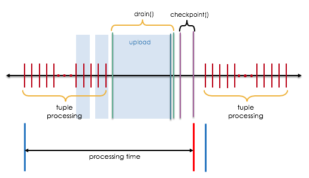

IBMStreams com.ibm.streamsx.objectstorage Toolkit > com.ibm.streamsx.objectstorage 1.7.5 > com.ibm.streamsx.objectstorage > ObjectStorageSink > Behavior in a consistent region
The operator can participate in a consistent region. The operator can be part of a consistent region, but cannot be at the start of a consistent region.
While consistent region supports that tuples are processed at least once, the operator creates objects in object storage with exactly once semantics.
- Object is not visible before it is finally closed
- Consistent region replays tuples in case of failures
- Object with the same name is overwritten on object storage

On drain, the operator flushes its internal buffer and uploads the object to the object storage. On checkpoint, the operator stores the current object number to the checkpoint. If the region became inconsistent (e.g. failure causes PE restart), then reset() is called and the operator reads the checkpointed data. In the case the region is resetted after objects have been already closed on object storage, the affected objects are deleted on object storage.
Restrictions
The close mode can not be configured when running in a consistent region. The parameters bytesPerObject, closeOnPunct, timePerObject and tuplesPerObject are ignored.
There is a limited set of variables for the object name supported when running consistent region. The variable %OBJECTNUM is mandatory, %PARTITIONS is optional, all other variables are not supported. The object number is incrementend after objects are uploaded at end of drain.
Metrics
- drainTime - Drain time of this operator in milliseconds
- drainTimeMax - Maximum drain time of this operator in milliseconds
- processingRate - Number of input data processed in KB/sec.
- nDeletedObjects - Number of objects deleted on reset after objects are closed.
The metric processingRate is calculated by the number of bytes received until drain() and the time from first tuple arrival until end of checkpoint()
